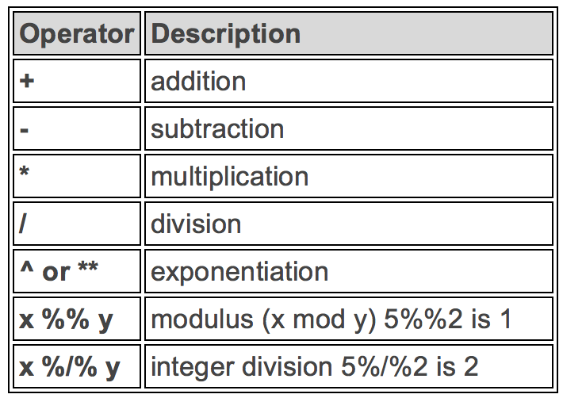
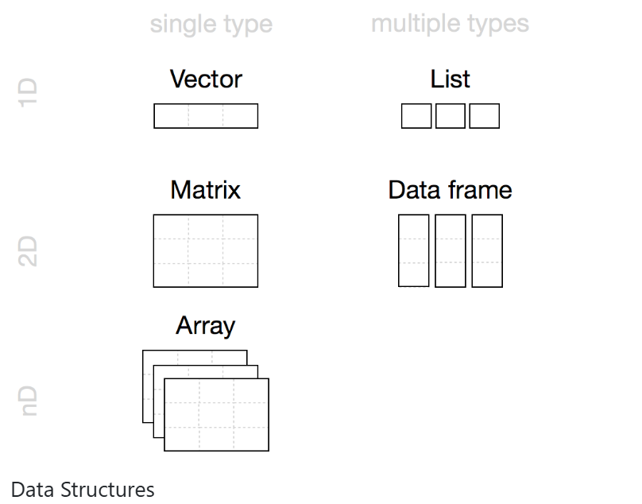
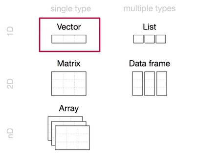
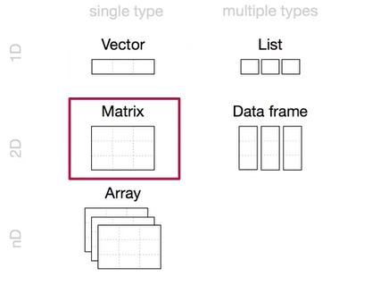
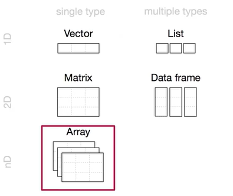
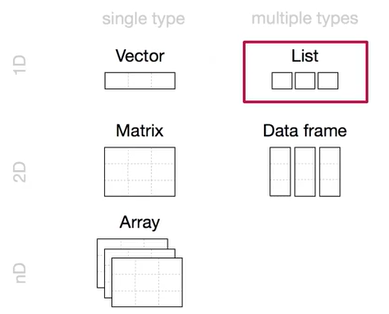
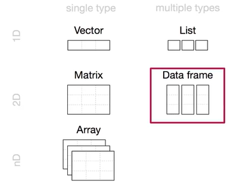

R Basics
R Basics: Part 1
- Operations
- Objects
- Evaluations
- Exercise
Key Concept
- R is a flexible and powerful tool - far beyond what spreadsheets like Excel can offer.
- As data analysis shifts more towards script-based solutions (like R), it’s important to get comfortable with this approach.
- We know it can feel overwhelming at first - the learning curve is real!
- This session is here to make that first step easier and help you begin exploring R at your own pace.
Arithmetic Operators

Logical Operators

Basic operations
Let’s start with a few simple calculations. These help you get used to the way R responds.
1 + 1 # Adds 1 and 1
12 / 4 # Divides 12 by 4
3 * 7 # Multiplies 3 by 7
10 ^ 3 # 10 to the power of 3You’ll see output like:
[1] 2That [1] just means this is the first item in the output. If R prints out lots of numbers, it uses [x] to show you where each row starts.
Basic operations
Operator Precedence (Order of Operations): Just like in maths (BODMAS), R follows a specific order when solving expressions:
5 * 6 + 2 # Multiplies first, then adds
5 * (6 + 2) # Adds first, then multipliesAssignment Operator in R
In R, to save values into objects (variables), we use the assignment operator <-.
This means: “store the value on the right into the object named on the left.”
x <- 10 # Assign 10 to object x
y <- x + 5 # Assign to y the result of x plus 5Note: In many other programming languages, = is used for assignment, but in R, the preferred operator is <-. Remember the + sign, by contrast, is an arithmetic operator used for addition, not assignment.
Objects in R
R is an object-based language. You create and work with objects, which are named containers for data. Think of an object as a labelled box that holds something useful.
In R, objects can contain:
- A single number (e.g.,
my_num <- 5) - A list of numbers (vector)
- A table of data (data frame)
- A grid of values (matrix)
- A custom function
Objects in R
To create an object, give it a name and use the assignment operator <- to assign it a value.
Remember, R is case-sensitive - variable names like Data and data refer to different objects.
We can then use these objects going forward rather than the values directly. Operations can be applied to these objects, and objects can be over-written.
Creating and Managing Objects in R
For Example:
x <- 48This means “x gets 48”. It stores the number 48 in an object called x.
To see what’s inside an object, simply type its name:
x
## [1] 48R remembers this object during your current session and lists it in the Environment tab in RStudio.
Tip: Click on the “Grid” view in the Environment tab to see more details like the object’s type and size.
Objects Can Hold Different Things/ Updating an Object
You can store other types of data too. For example, text:
y <- "R is cool"This stores a character string. Don’t forget the quotation marks, or you’ll get an error:
y <- R is cool
Error: unexpected symbol in "y <- R is"You can easily change the contents of an object by giving it a new value:
y <- 1024Now y holds a number instead of text, and its type updates in the Environment.
Working With Objects
Once you’ve created objects, you can use them in calculations:
z <- x + y
z
## [1] 1072This works because both objects are numeric. But if you try this with text, R will complain:
my_obj <- "hello"
my_obj2 <- "world!"
my_obj3 <- my_obj + my_obj2
Error in my_obj + my_obj2 : non-numeric argument to binary operatorWhy Can’t We Add Text with +?
In R, operations like + are designed to work with numeric data. If you try to use + with character strings - such as words or sentences, R will not know how to handle the operation and will return an error.
This error means R expected numbers but received text instead. To combine text values (also called concatenating strings), use:
paste(x, y)- joins with a space in between:"Hello World"paste0(x, y)– joins directly without space:"HelloWorld"
Tip: Use paste() when you want spacing, and paste0() when you don’t.
Exercise
What R code would you write to work these out?
- What is \(3 \times 17\)?
- Create an object
dequal to 10. - Divide
dby 5. - Overwrite
d, let it now be equal to 20, and printdto see the result. - Overwrite
d(currently 20) with \(4 \times d\), and printd. - Overwrite
d(currently 80) with \(d \times d\), and print the result.
- What is \(3 \times 17\)?
3 * 17- Create an object
dequal to 10.
d <- 10- Divide
dby 5.
d / 5- Overwrite
d, let it now be equal to 20, and printd.
d <- 20
d- Overwrite
d(now 20) with 4 timesd, and printd.
d <- d * 4
d- Overwrite
d(now 80) withdtimesd, and print the result.
d <- d * d
dCommon Errors
- One frequent mistake is trying to use an object that hasn’t been created:
my_obj <- 48
my_obj4 <- my_obj + no_obj
Error: object 'no_obj' not foundCheck the Environment tab-if the object isn’t there, R won’t know what to do.
Naming objects is surprisingly hard! Try to keep names short but meaningful. Some good formats:
output_summary(snake case – recommended)output.summaryoutputSummary
Common Errors
Avoid: - Names starting with numbers or a dot followed by a number - Special characters like !, &, * - Using reserved words like TRUE, NA, or built-in functions like data
Seeing and Removing Objects in R
Viewing Objects in Your Environment
- When you’ve created lots of objects, it can be hard to keep track of them.
- You can use the
ls()function to list all objects currently in your R environment (or simply the environment pane)
ls()Removing Objects from the Environment
rm()can be used to remove specific objects.
rm(a) # removes object a
rm(x, y) # removes multiple objects- But we recommend getting in the habit of starting fresh and restarting R! In Rstudio, use Ctrl+Shift+F10 (Windows and Linux) or Shift+Command+0 (Mac OS)
Logical Evaluations
Evaluations return TRUE or FALSE
- In R, we can ask questions like “Is one number greater than another?”
- The result is a logical value: either
TRUEorFALSE.
Examples:
4 > 2 # TRUE – 4 is greater than 2
4 > 5 # FALSE – 4 is not greater than 5
4 == 3 # FALSE – 4 is not equal to 3
4 != 3 # TRUE – 4 is not equal to 3
"dog" == "dog" # TRUE – both are the same string
"dog" == "cat" # FALSE – the strings are differentLogical Evaluations
Tips for Beginners:
- Use == when checking for equality (not just =).
- Logical expressions are often used in filters, if-statements, and data analysis.
- You can use these checks to control your program’s behaviour based on conditions.
Logical Evaluations
Storing Evaluation Results
- You can save the result of an evaluation in an object.
- This is useful for making decisions or filtering data later.
Example:
b <- 4 < 2 # Stores the result (FALSE) in object b
b # Prints FALSEWhen is this useful? - To check conditions (e.g. if a person is over a certain age) - To convert a continuous variable into a binary one (e.g. alive or dead) - Checking if patients meet criteria for treatment or intervention eligibility
Exercise
Try these!
- Create a new object
Aand set it equal to 3. - Create another object
res, let it be the product ofb(where b is equal to 10) andA, and output the result. - Take the average of
b,A, andres. - Is
6.2equal to12.4 / 2? - Let
m = 84 / 106andq = 156 / 3. Ism / qgreater than, less than, or equal to0.0152?
- Create a new object
Aand set it equal to 3.
A <- 3- Create another object
res, let it be the product ofdandA, and output the result.
res <- d * A
res- Take the average of
d,A, andres.
(d + A + res) / 3
# mean(c(d, A, res))- Is
6.2equal to12.4 / 2?
6.2 == 12.4 / 2- Let
m = 84 / 106andq = 156 / 3. Ism / qgreater than, less than, or equal to0.0152?
m <- 84 / 106
q <- 156 / 3
m / q > 0.0152
m / q < 0.0152
m / q == 0.0152R Basics: Part 2
- Object classes
- Object structures
- Loading a dataset in R
R Basics: Object Classes and Structures
Goal: Understand what type of data (class) you’re working with, and how data is organised (structure).
So far, we’ve worked with single values (like 1 or 2). But often, objects in R hold multiple values. These could be: - Heights of several children (numbers) - Names of the children (text) - Whether each child is tall or not (TRUE/FALSE)
We will learn: - What class an object is - How objects behave depending on their class
R Basics: What is an Object Class?
Each object in R has a class, which describes the type of data it holds.
- numeric – numbers, e.g. 1.45, 3.2
- integer – whole numbers, e.g. 4, 22
- character – text, e.g. “Alice”
- factor – categories, e.g. “Male”, “Female”
- logical – TRUE or FALSE
R Basics: What is an Object Class?
To check the class of an object, use the class() function:
# Try these below - what are the classes?
height <- c(1.38, 1.45, 1.21)
class(height)
names <- c("Alice", "Bob")
class(names)
sex <- factor(c("F", "M"))
class(sex)
tall <- height > 1.4
class(tall) R Basics: What is an Object Class?
To check the class of an object, use the class() function:
# the answere are....
height <- c(1.38, 1.45, 1.21)
class(height) #numeric
names <- c("Alice", "Bob")
class(names) #character
sex <- factor(c("F", "M"))
class(sex) #factor
tall <- height > 1.4
class(tall) #logicalR Basics: What are data structures?

R Basics: Vectors
- One-dimensional arrays
- One type of data (numeric, character, logical…)
- Example: c(1, 2, 3)

R Basics: Matrices
- Two-dimensional arrays
- One type of data (numeric, character, logical…)
- Example: matrix(1:9, nrow=3, ncol=3)

R Basics: Arrays
- Multi-dimensional arrays
- One type of data (numeric, character, logical…)
- Example: array(1:27, dim= c(3, 3, 3))

R Basics: Lists
- One-dimensional
- Different data types
- Example: list(1, “a”, TRUE)

R Basics: Data Frames
- Two-dimensional
- Different data types
- Example: data.frame (x=1:3, y=c(“a”, “b”, “c”))

R Basics: How to Create Vectors
We can make vectors (multiple values in one object) using the c() function:
c(1.2, 2.3, 3.4) # combines values into one object?c gives help for the combine function. Try it in the console!
R Basics: Operations on Vectors
You can do operations on vectors too:
Add values:
c(1, 2, 3) + 1
c(1, 2, 3) + c(1, 2, 3)
c(1, 2, 3, 4) + c(1, 0, 1)
#Try it in the console!R Basics: Operations on Vectors
You can do operations on vectors too:
Add values:
c(1, 2, 3) + 1
#2 3 4
c(1, 2, 3) + c(1, 2, 3)
#2 4 6
c(1, 2, 3, 4) + c(1, 0, 1)
#2 2 4 5
#what did you notice about the last code?Multiply:
heightft <- height * 3.28R Basics: How to Create a Matrix
We can make a matrix using the matrix() function:
# A 2x3 matrix
m <- matrix(1:6, nrow = 2, ncol = 3)
print(m)
#Try it in the consoleR Basics: How to Create an Array
We can make an Array using the array() function:
# Create a 3x3x2 array
arr <- array(1:18, dim = c(3, 3, 2))
print(arr)
#Try it in the consoleExercise time!
- Create a vector called ‘odds’ with the numbers 1,3,5,7,9.
- Show what class odds is.
- Evaluate which numbers in the odds vector are greater than 4.
# Create a vector called 'odds' with the numbers
odds <- c(1, 3, 5, 7, 9)
# Show what class odds is.
class(odds) #numeric
# Evaluate which numbers in the odds vector are greater than 4.
odds > 4 #FALSE FALSE TRUE TRUE TRUER Basics: Loading in a dataset
Base R loads in with some base datasets, packages, functions etc, one of these is the iris dataset
data("iris")
data <- irisLoading this in, the environment tab might show us what it contains, but lets double check this
colnames(data)
[1] "Sepal.Length" "Sepal.Width" "Petal.Length" "Petal.Width"
[5] "Species" How do we select one of these variables?
With the $!
data$Sepal.LengthHow can we check what class this variable is?
class(data$Sepal.Length)
[1] "numeric"Final Challenge
Install the cowsay package, load it, and use the ‘say’ function to write something memorable
Hint 1: you will need to think back to Sol’s slides on how to load a package
Hint 2: Ask R to help you understand the function!
Show us what you’ve done in mentimeter
#Install the cowsay package, load it, and test it:
install.packages("cowsay")
library(cowsay)
say("I've installed cowsay!")
cowsay::say("Hello") # qualified names
#Read the package docs, what else can it do?
vignette("cowsay")
?cowsay::say
help(package="cowsay")
say("why did the chicken cross the road", "chicken")